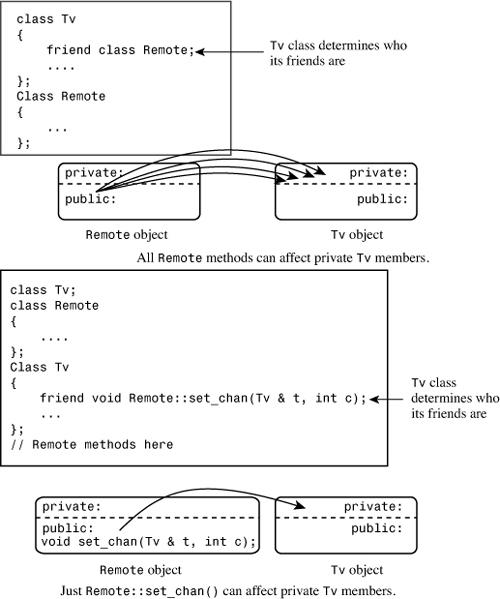
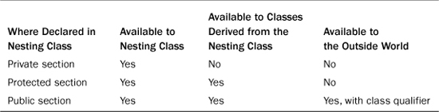
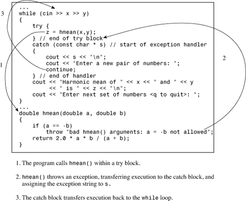
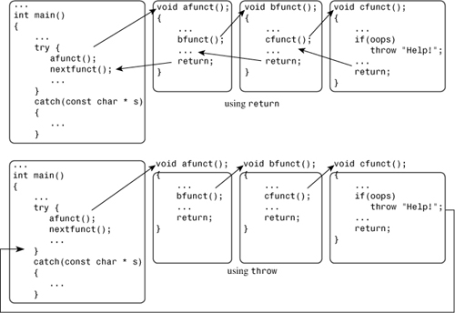
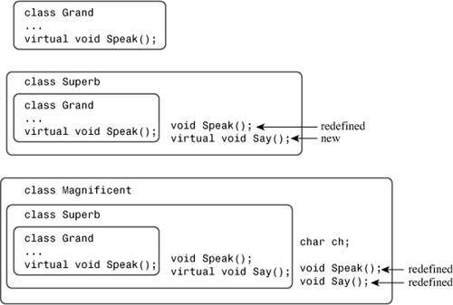

In this chapter you’ll learn about the following:
• Friend classes
• Friend class methods
• Nested classes
• Throwing exceptions, try blocks, and catch blocks
• Exception classes
• Runtime type identification (RTTI)
• dynamic_cast and typeid
• static_cast, const_cast, and reinterpret_cast
This chapter ties up some loose ends and ventures into some of the later additions to the C++ language. The loose ends include friend classes, friend member functions, and nested classes, which are classes declared within other classes. The later additions discussed here are exceptions, runtime type identification (RTTI), and improved type cast control. C++ exception handling provides a mechanism for dealing with unusual occurrences that otherwise would bring a program to a halt. RTTI is a mechanism for identifying object types. The new type cast operators improve the safety of type casts. These last three facilities are fairly new to C++, and older compilers do not support them.
Several examples in this book so far use friend functions as part of the extended interface for a class. Such functions are not the only kinds of friends a class can have. A class also can be a friend. In that case, any method of the friend class can access private and protected members of the original class. Also you can be more restrictive and designate just particular member functions of a class to be friends to another class. A class defines which functions, member functions, or classes are friends; friendship cannot be imposed from the outside. Thus, although friends do grant outside access to a class’s private portion, they don’t really violate the spirit of object-oriented programming. Instead, they provide more flexibility to the public interface.
When might you want to make one class a friend to another? Let’s look at an example. Suppose you must program a simple simulation of a television and a remote control. You decide to define a Tv class representing a television and a Remote class representing a remote control. Clearly, there should be some sort of relationship between these classes, but what kind? A remote control is not a television and vice versa, so the is-a relationship of public inheritance doesn’t apply. Nor is either a component of the other, so the has-a relationship of containment or of private or protected inheritance doesn’t apply. What is true is that a remote control can modify the state of a television, and this suggests making the Remote class a friend to the Tv class.
Let’s define the Tv class. You can represent a television with a set of state members—that is, variables that describe various aspects of the television. Here are some of the possible states:
• On/off
• Channel setting
• Volume setting
• Cable or antenna tuning mode
• TV tuner or A/V input
The tuning mode reflects the fact that, in the United States, the spacing between channels for channels 14 and up is different for cable reception than it is for UHF broadcast reception. The input selection chooses between TV, which could be either cable or broadcast TV, and a DVD. Some sets may offer more choices, such as multiple DVD/Bluray inputs, but this list is enough for the purposes of this example.
Also a television has some parameters that aren’t state variables. For example, televisions vary in the number of channels they can receive, and you can include a member to track that value.
Next, you must provide the class with methods for altering the settings. Many television sets these days hide their controls behind panels, but it’s still possible with most televisions to change channels, and so on, without a remote control. However, often you can go up or down one channel at a time but can’t select a channel at random. Similarly, there’s usually a button for increasing the volume and one for decreasing the volume.
A remote control should duplicate the controls built in to the television. Many of its methods can be implemented by using Tv methods. In addition, a remote control typically provides random access channel selection. That is, you can go directly from channel 2 to channel 20 without going through all the intervening channels. Also many remotes can work in two or more modes, for example, as a television controller and as a DVD controller.
These considerations suggest a definition like that shown in Listing 15.1. The definition includes several constants defined as enumerations. The following statement makes Remote a friend class:
friend class Remote;
A friend declaration can appear in a public, private, or protected section; the location makes no difference. Because the Remote class mentions the Tv class, the compiler has to know about the Tv class before it can handle the Remote class. The simplest way to accomplish this is to define the Tv class first. Alternatively, you can use a forward declaration; we’ll discuss that option soon.
// tv.h -- Tv and Remote classes
#ifndef TV_H_
#define TV_H_
class Tv
{
public:
friend class Remote; // Remote can access Tv private parts
enum {Off, On};
enum {MinVal,MaxVal = 20};
enum {Antenna, Cable};
enum {TV, DVD};
Tv(int s = Off, int mc = 125) : state(s), volume(5),
maxchannel(mc), channel(2), mode(Cable), input(TV) {}
void onoff() {state = (state == On)? Off : On;}
bool ison() const {return state == On;}
bool volup();
bool voldown();
void chanup();
void chandown();
void set_mode() {mode = (mode == Antenna)? Cable : Antenna;}
void set_input() {input = (input == TV)? DVD : TV;}
void settings() const; // display all settings
private:
int state; // on or off
int volume; // assumed to be digitized
int maxchannel; // maximum number of channels
int channel; // current channel setting
int mode; // broadcast or cable
int input; // TV or DVD
};
class Remote
{
private:
int mode; // controls TV or DVD
public:
Remote(int m = Tv::TV) : mode(m) {}
bool volup(Tv & t) { return t.volup();}
bool voldown(Tv & t) { return t.voldown();}
void onoff(Tv & t) { t.onoff(); }
void chanup(Tv & t) {t.chanup();}
void chandown(Tv & t) {t.chandown();}
void set_chan(Tv & t, int c) {t.channel = c;}
void set_mode(Tv & t) {t.set_mode();}
void set_input(Tv & t) {t.set_input();}
};
#endif
Most of the class methods in Listing 15.1 are defined inline. Note that each Remote method other than the constructor takes a reference to a Tv object as an argument. This reflects that a remote has to be aimed at a particular TV. Listing 15.2 shows the remaining definitions. The volume-setting functions change the volume member by one unit unless the sound has reached its minimum or maximum setting. The channel selection functions use wraparound, with the lowest channel setting, taken to be 1, immediately following the highest channel setting, maxchannel.
Many of the methods use the conditional operator to toggle a state between two settings:
void onoff() {state = (state == On)? Off : On;}
Provided that the two state values are true and false, or, equivalently, 0 and 1, this can be done more compactly by using the combined bitwise exclusive OR and assignment operator (^=), as discussed in Appendix E, “Other Operators”:
void onoff() {state ^= 1;}
In fact, you could store up to eight bivalent state settings in a single unsigned char variable and toggle them individually, but that’s another story, one made possible by the bitwise operators discussed in Appendix E.
// tv.cpp -- methods for the Tv class (Remote methods are inline)
#include <iostream>
#include "tv.h"
bool Tv::volup()
{
if (volume < MaxVal)
{
volume++;
return true;
}
else
return false;
}
bool Tv::voldown()
{
if (volume > MinVal)
{
volume--;
return true;
}
else
return false;
}
void Tv::chanup()
{
if (channel < maxchannel)
channel++;
else
channel = 1;
}
void Tv::chandown()
{
if (channel > 1)
channel--;
else
channel = maxchannel;
}
void Tv::settings() const
{
using std::cout;
using std::endl;
cout << "TV is " << (state == Off? "Off" : "On") << endl;
if (state == On)
{
cout << "Volume setting = " << volume << endl;
cout << "Channel setting = " << channel << endl;
cout << "Mode = "
<< (mode == Antenna? "antenna" : "cable") << endl;
cout << "Input = "
<< (input == TV? "TV" : "DVD") << endl;
}
}
Listing 15.3 is a short program that tests some of the features of the program so far. The same controller is used to control two separate televisions.
//use_tv.cpp -- using the Tv and Remote classes
#include <iostream>
#include "tv.h"
int main()
{
using std::cout;
Tv s42;
cout << "Initial settings for 42\" TV:\n";
s42.settings();
s42.onoff();
s42.chanup();
cout << "\nAdjusted settings for 42\" TV:\n";
s42.settings();
Remote grey;
grey.set_chan(s42, 10);
grey.volup(s42);
grey.volup(s42);
cout << "\n42\" settings after using remote:\n";
s42.settings();
Tv s58(Tv::On);
s58.set_mode();
grey.set_chan(s58,28);
cout << "\n58\" settings:\n";
s58.settings();
return 0;
}
Here is the output of the program in Listings 15.1, 15.2, and 15.3:
Initial settings for 42" TV:
TV is Off
Adjusted settings for 42" TV:
TV is On
Volume setting = 5
Channel setting = 3
Mode = cable
Input = TV
42" settings after using remote:
TV is On
Volume setting = 7
Channel setting = 10
Mode = cable
Input = TV
58" settings:
TV is On
Volume setting = 5
Channel setting = 28
Mode = antenna
Input = TV
The main point to this exercise is that class friendship is a natural idiom in which to express some relationships. Without some form of friendship, you would either have to make the private parts of the Tv class public or else construct some awkward, larger class that encompasses both a television and a remote control. And that solution wouldn’t reflect the fact that a single remote control can be used with several televisions.
Looking at the code for the last example, you may notice that most of the Remote methods are implemented by using the public interface for the Tv class. This means that those methods don’t really need friend status. Indeed, the only Remote method that accesses a private Tv member directly is Remote::set_chan(), so that’s the only method that needs to be a friend. You do have the option of making just selected class members friends to another class rather than making the entire class a friend, but that’s a bit more awkward. You need to be careful about the order in which you arrange the various declarations and definitions. Let’s look at why.
The way to make Remote::set_chan() a friend to the Tv class is to declare it as a friend in the Tv class declaration:
class Tv
{
friend void Remote::set_chan(Tv & t, int c);
...
};
However, for the compiler to process this statement, it needs to have already seen the Remote definition. Otherwise, it won’t know that Remote is a class and that set_chan() is a method of that class. This suggests putting the Remote definition above the Tv definition. But the fact that Remote methods mention Tv objects means that the Tv definition should appear above the Remote definition. Part of the way around the circular dependence is to use a forward declaration. To do so, you insert the following statement above the Remote definition:
class Tv; // forward declaration
This provides the following arrangement:
class Tv; // forward declaration
class Remote { ... };
class Tv { ... };
Could you use the following arrangement instead?
class Remote; // forward declaration
class Tv { ... };
class Remote { ... };
The answer is no. The reason, as mentioned earlier, is that when the compiler sees that a Remote method is declared as a friend in the Tv class declaration, the compiler needs to have already viewed the declaration of the Remote class in general and of the set_chan() method in particular.
Another difficulty remains. In Listing 15.1, the Remote declaration contains inline code such as the following:
void onoff(Tv & t) { t.onoff(); }
Because this calls a Tv method, the compiler needs to have seen the Tv class declaration at this point so that it knows what methods Tv has. But as you’ve seen, that declaration necessarily follows the Remote declaration. The solution to this problem is to restrict Remote to method declarations and to place the actual definitions after the Tv class. This leads to the following ordering:
class Tv; // forward declaration
class Remote { ... }; // Tv-using methods as prototypes only
class Tv { ... };
// put Remote method definitions here
The Remote prototypes look like this:
void onoff(Tv & t);
All the compiler needs to know when inspecting this prototype is that Tv is a class, and the forward declaration supplies that information. By the time the compiler reaches the actual method definitions, it has already read the Tv class declaration and has the added information needed to compile those methods. By using the inline keyword in the method definitions, you can still make the methods inline methods. Listing 15.4 shows the revised header file.
// tvfm.h -- Tv and Remote classes using a friend member
#ifndef TVFM_H_
#define TVFM_H_
class Tv; // forward declaration
class Remote
{
public:
enum State{Off, On};
enum {MinVal,MaxVal = 20};
enum {Antenna, Cable};
enum {TV, DVD};
private:
int mode;
public:
Remote(int m = TV) : mode(m) {}
bool volup(Tv & t); // prototype only
bool voldown(Tv & t);
void onoff(Tv & t) ;
void chanup(Tv & t) ;
void chandown(Tv & t) ;
void set_mode(Tv & t) ;
void set_input(Tv & t);
void set_chan(Tv & t, int c);
};
class Tv
{
public:
friend void Remote::set_chan(Tv & t, int c);
enum State{Off, On};
enum {MinVal,MaxVal = 20};
enum {Antenna, Cable};
enum {TV, DVD};
Tv(int s = Off, int mc = 125) : state(s), volume(5),
maxchannel(mc), channel(2), mode(Cable), input(TV) {}
void onoff() {state = (state == On)? Off : On;}
bool ison() const {return state == On;}
bool volup();
bool voldown();
void chanup();
void chandown();
void set_mode() {mode = (mode == Antenna)? Cable : Antenna;}
void set_input() {input = (input == TV)? DVD : TV;}
void settings() const;
private:
int state;
int volume;
int maxchannel;
int channel;
int mode;
int input;
};
// Remote methods as inline functions
inline bool Remote::volup(Tv & t) { return t.volup();}
inline bool Remote::voldown(Tv & t) { return t.voldown();}
inline void Remote::onoff(Tv & t) { t.onoff(); }
inline void Remote::chanup(Tv & t) {t.chanup();}
inline void Remote::chandown(Tv & t) {t.chandown();}
inline void Remote::set_mode(Tv & t) {t.set_mode();}
inline void Remote::set_input(Tv & t) {t.set_input();}
inline void Remote::set_chan(Tv & t, int c) {t.channel = c;}
#endif
If you include tvfm.h instead of tv.h in tv.cpp and use_tv.cpp, the resulting program behaves the same as the original. The difference is that just one Remote method—instead of all the Remote methods—is a friend to the Tv class. Figure 15.1 illustrates this difference.
Figure 15.1. Class friends versus class member friends.

Recall that inline functions have internal linkage, which means the function definition must be in the file that uses the function. Here, the inline definitions are in the header file, so including the header file in the file that uses the definitions places the definition in the right place. You could place the definitions in the implementation file instead, provided that you remove the inline keyword, thus giving the functions external linkage.
By the way, making the entire Remote class a friend doesn’t need a forward declaration because the friend statement itself identifies Remote as a class:
friend class Remote;
Other combinations of friends and classes besides the ones discussed so far in this chapter are possible. Let’s take a brief look at some of them now.
Suppose the advance of technology brings interactive remote controls. For example, an interactive remote control unit might let you enter a response to some question posed on a television program, and the television might activate a buzzer in your remote control if your response is wrong. Ignoring the possibility of television using such facilities to program the viewers, let’s just look at the C++ programming aspects. The new setup would benefit from mutual friendship, with some Remote methods being able to affect a Tv object, as before, and with some Tv methods being able to affect a Remote object. This can be accomplished by making the classes friends to each other. That is, Tv will be a friend to Remote in addition to Remote being a friend to Tv. One point to keep in mind is that a Tv method that uses a Remote object can be prototyped before the Remote class declaration but must be defined after the declaration so that the compiler will have enough information to compile the method. The setup would look like this:
class Tv
{
friend class Remote;
public:
void buzz(Remote & r);
...
};
class Remote
{
friend class Tv;
public:
void Bool volup(Tv & t) { t.volup(); }
...
};
inline void Tv::buzz(Remote & r)
{
...
}
Because the Remote declaration follows the Tv declaration, Remote::volup() can be defined in the class declaration. However, the Tv::buzz() method has to be defined outside the Tv declaration so that the definition can follow the Remote declaration. If you don’t want buzz() to be inline, you need to define it in a separate method definitions file.
Another use for friends is when a function needs to access private data in two separate classes. Logically, such a function should be a member function of each class, but that’s impossible. It could be a member of one class and a friend to the other, but sometimes it’s more reasonable to make the function a friend to both. Suppose, for example, that you have a Probe class that represents some sort of programmable measuring device and an Analyzer class that represents some sort of programmable analyzing device. Each has an internal clock, and you would like to be able to synchronize the two clocks. You could use something along the following lines:
class Analyzer; // forward declaration
class Probe
{
friend void sync(Analyzer & a, const Probe & p); // sync a to p
friend void sync(Probe & p, const Analyzer & a); // sync p to a
...
};
class Analyzer
{
friend void sync(Analyzer & a, const Probe & p); // sync a to p
friend void sync(Probe & p, const Analyzer & a); // sync p to a
...
};
// define the friend functions
inline void sync(Analyzer & a, const Probe & p)
{
...
}
inline void sync(Probe & p, const Analyzer & a)
{
...
}
The forward declaration enables the compiler to know that Analyzer is a type when it reaches the friend declarations in the Probe class declaration.
In C++, you can place a class declaration inside another class. The class declared within another is called a nested class, and it helps avoid name clutter by giving the new type class scope. Member functions of the class containing the declaration can create and use objects of the nested class. The outside world can use the nested class only if the declaration is in the public section and if you use the scope-resolution operator. (Older versions of C++ either don’t allow nested classes or implement the concept incompletely.)
Nesting classes is not the same as containment. Recall that containment means having a class object as a member of another class. Nesting a class, on the other hand, does not create a class member. Instead, it defines a type that is known just locally to the class that contains the nested class declaration.
The usual reasons for nesting a class are to assist in the implementation of another class and to avoid name conflicts. The Queue class example in Listing 12.10 in Chapter 12, “Classes and Dynamic Memory Allocation,” provides a disguised case of nested classes by nesting a structure definition:
class Queue
{
private:
// class scope definitions
// Node is a nested structure definition local to this class
struct Node {Item item; struct Node * next;};
...
};
Because a structure is a class whose members are public by default, Node really is a nested class. However, this definition doesn’t take advantage of class abilities. In particular, it lacks an explicit constructor. Let’s remedy that now.
First, you need to find where Node objects are created in the Queue example. Examining the class declaration (see Listing 12.10) and the methods definitions (see Listing 12.11) reveals that the only place in which Node objects are created is in the enqueue() method:
bool Queue::enqueue(const Item & item)
{
if (isfull())
return false;
Node * add = new Node; // create node
// on failure, new throws std::bad_alloc exception
add->item = item; // set node pointers
add->next = NULL;
...
}
This code explicitly assigns values to the Node members after creating a Node. This is the sort of work that is more properly done by a constructor.
Knowing now where and how a constructor should be used, you can provide an appropriate constructor definition:
class Queue
{
// class scope definitions
// Node is a nested class definition local to this class
class Node
{
public:
Item item;
Node * next;
Node(const Item & i) : item(i), next(0) { }
};
...
};
This constructor initializes the node’s item member to i and sets the next pointer to 0, which is one way of writing the null pointer in C++. (Using NULL would require including a header file that defines NULL. Users of a C++11-compliant compiler can use nullptr.) Because all nodes created by the Queue class have next initially set to the null pointer, this is the only constructor the class needs.
Next, you need to rewrite enqueue() by using the constructor
bool Queue::enqueue(const Item & item)
{
if (isfull())
return false;
Node * add = new Node(item); // create, initialize node
// on failure, new throws std::bad_alloc exception
...
}
This makes the code for enqueue() a bit shorter and a bit safer because it automates initialization rather than requiring the programmer to correctly remember what should be done.
This example defines the constructor in the class declaration. Suppose you wanted to define it in a methods file, instead. In that case, the definition must reflect that the Node class is defined within the Queue class. This is accomplished by using the scope-resolution operator twice:
Queue::Node::Node(const Item & i) : item(i), next(0) { }
Two kinds of access pertain to nested classes. First, where a nested class is declared controls the scope of the nested class; that is, it establishes which parts of a program can create objects of that class. Second, as with any class, the public, protected, and private sections of a nested class provide access control to class members. Where and how a nested class can be used depends on both scope and access control. Let’s examine these points further.
If a nested class is declared in a private section of a second class, it is known only to that second class. This applies, for example, to the Node class nested in the Queue declaration in the preceding example. Hence, Queue members can use Node objects and pointers to Node objects, but other parts of a program don’t even know that the Node class exists. If you were to derive a class from Queue, Node would be invisible to that class, too, because a derived class can’t directly access the private parts of a base class.
If the nested class is declared in a protected section of a second class, it is visible to that class but invisible to the outside world. However, in this case, a derived class would know about the nested class and could directly create objects of that type.
If a nested class is declared in a public section of a second class, it is available to the second class, to classes derived from the second class, and, because it’s public, to the outside world. However, because the nested class has class scope, it has to be used with a class qualifier in the outside world. For example, suppose you have this declaration:
class Team
{
public:
class Coach { ... };
...
};
Now suppose you have an unemployed coach, one who belongs to no team. To create a Coach object outside the Team class, you can use this:
Team::Coach forhire; // create a Coach object outside the Team class
These same scope considerations apply to nested structures and enumerations, too. Indeed, many programmers use public enumerations to provide class constants that can be used by client programmers. For example, the many implementations of classes defined to support the iostream facility use this technique to provide various formatting options, as you’ve already seen (and will explore more fully in Chapter 17, “Input, Output, and Files”). Table 15.1 summarizes scope properties for nested classes, structures, and enumerations.
Table 15.1. Scope Properties for Nested Classes, Structures, and Enumerations

After a class is in scope, access control comes into play. The same rules govern access to a nested class that govern access to a regular class. Declaring the Node class in the Queue class declaration does not grant the Queue class any special access privileges to the Node class, nor does it grant the Node class any special access privileges to the Queue class. Thus, a Queue class object can access only the public members of a Node object explicitly. For that reason, the Queue example makes all the members of the Node class public. This violates the usual practice of making data members private, but the Node class is an internal implementation feature of the Queue class and is not visible to the outside world. That’s because the Node class is declared in the private section of the Queue class. Thus, although Queue methods can access Node members directly, a client using the Queue class cannot do so.
In short, the location of a class declaration determines the scope or visibility of a class. Given that a particular class is in scope, the usual access control rules (public, protected, private, friend) determine the access a program has to members of the nested class.
You’ve seen that templates are a good choice for implementing container classes such as the Queue class. You may be wondering whether having a nested class poses any problems to converting the Queue class definition to a template. The answer is no. Listing 15.5 shows how this conversion can be made. As is common for class templates, the header file includes the class template, along with method function templates.
// queuetp.h -- queue template with a nested class
#ifndef QUEUETP_H_
#define QUEUETP_H_
template <class Item>
class QueueTP
{
private:
enum {Q_SIZE = 10};
// Node is a nested class definition
class Node
{
public:
Item item;
Node * next;
Node(const Item & i):item(i), next(0){ }
};
Node * front; // pointer to front of Queue
Node * rear; // pointer to rear of Queue
int items; // current number of items in Queue
const int qsize; // maximum number of items in Queue
QueueTP(const QueueTP & q) : qsize(0) {}
QueueTP & operator=(const QueueTP & q) { return *this; }
public:
QueueTP(int qs = Q_SIZE);
~QueueTP();
bool isempty() const
{
return items == 0;
}
bool isfull() const
{
return items == qsize;
}
int queuecount() const
{
return items;
}
bool enqueue(const Item &item); // add item to end
bool dequeue(Item &item); // remove item from front
};
// QueueTP methods
template <class Item>
QueueTP<Item>::QueueTP(int qs) : qsize(qs)
{
front = rear = 0;
items = 0;
}
template <class Item>
QueueTP<Item>::~QueueTP()
{
Node * temp;
while (front != 0) // while queue is not yet empty
{
temp = front; // save address of front item
front = front->next;// reset pointer to next item
delete temp; // delete former front
}
}
// Add item to queue
template <class Item>
bool QueueTP<Item>::enqueue(const Item & item)
{
if (isfull())
return false;
Node * add = new Node(item); // create node
// on failure, new throws std::bad_alloc exception
items++;
if (front == 0) // if queue is empty,
front = add; // place item at front
else
rear->next = add; // else place at rear
rear = add; // have rear point to new node
return true;
}
// Place front item into item variable and remove from queue
template <class Item>
bool QueueTP<Item>::dequeue(Item & item)
{
if (front == 0)
return false;
item = front->item; // set item to first item in queue
items--;
Node * temp = front; // save location of first item
front = front->next; // reset front to next item
delete temp; // delete former first item
if (items == 0)
rear = 0;
return true;
}
#endif
One interesting thing about the template in Listing 15.5 is that Node is defined in terms of the generic type Item. Thus, a declaration like the following leads to a Node defined to hold type double values:
QueueTp<double> dq;
And the following declaration leads to a Node defined to hold type char values:
QueueTp<char> cq;
These two Node classes are defined in two separate QueueTP classes, so there is no name conflict between the two. That is, one node is type QueueTP<double>::Node, and the other is type QueueTP<char>::Node.
Listing 15.6 offers a short program for testing the new class.
// nested.cpp -- using a queue that has a nested class
#include <iostream>
#include <string>
#include "queuetp.h"
int main()
{
using std::string;
using std::cin;
using std::cout;
QueueTP<string> cs(5);
string temp;
while(!cs.isfull())
{
cout << "Please enter your name. You will be "
"served in the order of arrival.\n"
"name: ";
getline(cin, temp);
cs.enqueue(temp);
}
cout << "The queue is full. Processing begins!\n";
while (!cs.isempty())
{
cs.dequeue(temp);
cout << "Now processing " << temp << "...\n";
}
return 0;
}
Here is a sample run of the program in Listings 15.5 and 15.6:
Please enter your name. You will be served in the order of arrival.
name: Kinsey Millhone
Please enter your name. You will be served in the order of arrival.
name: Adam Dalgliesh
Please enter your name. You will be served in the order of arrival.
name: Andrew Dalziel
Please enter your name. You will be served in the order of arrival.
name: Kay Scarpetta
Please enter your name. You will be served in the order of arrival.
name: Richard Jury
The queue is full. Processing begins!
Now processing Kinsey Millhone...
Now processing Adam Dalgliesh...
Now processing Andrew Dalziel...
Now processing Kay Scarpetta...
Now processing Richard Jury...
Programs sometimes encounter runtime problems that prevent them from continuing normally. For example, a program may try to open an unavailable file, or it may request more memory than is available, or it may encounter values it cannot abide. Usually, programmers try to anticipate such calamities. C++ exceptions provide a powerful and flexible tool for dealing with these situations. Exceptions are a relatively recent addition to C++, so some older compilers haven’t implemented them. Also some compilers turn this feature off by default, so you may have to use the compiler options to turn it on.
Before examining exceptions, let’s look at some of the more rudimentary options available to programmers. As a test case, let’s look at a function that calculates the harmonic mean of two numbers. The harmonic mean of two numbers is defined as the inverse of the average of the inverses. This can be reduced to the following expression:
2.0 × x × y / (x + y)
Note that if y is the negative of x, this formula results in division by zero, a rather undesirable operation. Many newer compilers handle division by zero by generating a special floating-point value that represents infinity; cout displays this value as Inf, inf, INF, or something similar. Other compilers may produce programs that crash when division by zero occurs. It is best to write code that behaves in the same controlled fashion on all systems.
abort()One way to handle this is to have the function call the abort() function if one argument is the negative of the other. The abort() function has its prototype in the cstdlib (or stdlib.h) header file. A typical implementation, if called, sends a message such as “abnormal program termination” to the standard error stream (the same as the one used by cerr) and terminates the program. It also returns an implementation-dependent value that indicates failure to the operating system or, if the program was initiated by another program, to the parent process. Whether abort() flushes file buffers (that is, memory areas used to store material for transfers to and from files) depends on the implementation. If you prefer, you can use exit(), which does flush file buffers, but without displaying a message. Listing 15.7 shows a short program that uses abort().
//error1.cpp -- using the abort() function
#include <iostream>
#include <cstdlib>
double hmean(double a, double b);
int main()
{
double x, y, z;
std::cout << "Enter two numbers: ";
while (std::cin >> x >> y)
{
z = hmean(x,y);
std::cout << "Harmonic mean of " << x << " and " << y
<< " is " << z << std::endl;
std::cout << "Enter next set of numbers <q to quit>: ";
}
std::cout << "Bye!\n";
return 0;
}
double hmean(double a, double b)
{
if (a == -b)
{
std::cout << "untenable arguments to hmean()\n";
std::abort();
}
return 2.0 * a * b / (a + b);
}
Here’s a sample run of the program in Listing 15.7:
Enter two numbers: 3 6
Harmonic mean of 3 and 6 is 4
Enter next set of numbers <q to quit>: 10 -10
untenable arguments to hmean()
abnormal program termination
Note that calling the abort() function from hmean() terminates the program directly, without returning first to main(). In general, different compilers issue different abort messages. Here is another such message:
This application has requested the Runtime to terminate it
in an unusual way. Please contact the application's support
team for more information.
(You may, perhaps, enjoy the conceit that our little program has a support team.) The program could avoid aborting by checking the values of x and y before calling the hmean() function. However, it’s not safe to rely on a programmer to know (or care) enough to perform such a check.
A more flexible approach than aborting is to use a function’s return value to indicate a problem. For example, the get(void) member of the ostream class ordinarily returns the ASCII code for the next input character, but it returns the special value EOF if it encounters the end-of-file. This approach doesn’t work for hmean(). Any numeric value could be a valid return value, so there’s no special value available to indicate a problem. In this kind of situation, you can use a pointer argument or a reference argument to get a value back to the calling program and use the function return value to indicate success or failure. The istream family of overloaded >> operators uses a variant of this technique. By informing the calling program of the success or failure, you give the program the option of taking actions other than aborting. Listing 15.8 shows an example of this approach. It redefines hmean() as a bool function whose return value indicates success or failure. It adds a third argument for obtaining the answer.
//error2.cpp -- returning an error code
#include <iostream>
#include <cfloat> // (or float.h) for DBL_MAX
bool hmean(double a, double b, double * ans);
int main()
{
double x, y, z;
std::cout << "Enter two numbers: ";
while (std::cin >> x >> y)
{
if (hmean(x,y,&z))
std::cout << "Harmonic mean of " << x << " and " << y
<< " is " << z << std::endl;
else
std::cout << "One value should not be the negative "
<< "of the other - try again.\n";
std::cout << "Enter next set of numbers <q to quit>: ";
}
std::cout << "Bye!\n";
return 0;
}
bool hmean(double a, double b, double * ans)
{
if (a == -b)
{
*ans = DBL_MAX;
return false;
}
else
{
*ans = 2.0 * a * b / (a + b);
return true;
}
}
Here’s a sample run of the program in Listing 15.8:
Enter two numbers: 3 6
Harmonic mean of 3 and 6 is 4
Enter next set of numbers <q to quit>: 10 -10
One value should not be the negative of the other - try again.
Enter next set of numbers <q to quit>: 1 19
Harmonic mean of 1 and 19 is 1.9
Enter next set of numbers <q to quit>: q
Bye!
In Listing 15.8, the program design allows the user to continue, bypassing the effects of bad input. Of course, the design does rely on the user to check the function return value, something that programmers don’t always do. For example, to keep the sample programs short, the listings in this book don’t check to see if cout was successful in handling output.
You could use either a pointer or a reference for the third arguments. Many programmers prefer using pointers for arguments of the built-in types because that makes it obvious which argument is being used for the answer.
Another variation on the idea of storing a return condition somewhere is to use a global variable. The function with the potential problem could set the global variable to a particular value if things go wrong, and the calling program could check the variable. This is the method used by the traditional C math library, which uses the global variable errno for this purpose. You have to make sure, of course, that some other function doesn’t try to use a global variable of the same name for some other purpose.
Now let’s see how you can handle problems by using the exception mechanism. A C++ exception is a response to an exceptional circumstance that arises while a program is running, such as an attempt to divide by zero. Exceptions provide a way to transfer control from one part of a program to another. Handling an exception has three components:
• Throwing an exception
• Catching an exception with a handler
• Using a try block
A program throws an exception when a problem shows up. For example, you can modify hmean() in Listing 15.7 to throw an exception instead of call the abort() function. A throw statement, in essence, is a jump; that is, it tells a program to jump to statements at another location. The throw keyword indicates the throwing of an exception. It’s followed by a value, such as a character string or an object, that indicates the nature of the exception.
A program catches an exception with an exception handler at the place in the program where you want to handle the problem. The catch keyword indicates the catching of an exception. A handler begins with the keyword catch, followed by a type declaration (in parentheses) that indicates the type of exception to which it responds. That, in turn, is followed by a brace-enclosed block of code that indicates the actions to take. The catch keyword, along with the exception type, serves as a label that identifies the point in a program to which execution should jump when an exception is thrown. An exception handler is also called a catch block.
A try block identifies a block of code for which particular exceptions will be activated. It’s followed by one or more catch blocks. The try block itself is indicated by the keyword try, followed by a brace-enclosed block of code indicating the code for which exceptions will be noticed.
The easiest way to see how these three elements fit together is to look at a short example, such as the one in Listing 15.9.
// error3.cpp -- using an exception
#include <iostream>
double hmean(double a, double b);
int main()
{
double x, y, z;
std::cout << "Enter two numbers: ";
while (std::cin >> x >> y)
{
try { // start of try block
z = hmean(x,y);
} // end of try block
catch (const char * s) // start of exception handler
{
std::cout << s << std::endl;
std::cout << "Enter a new pair of numbers: ";
continue;
} // end of handler
std::cout << "Harmonic mean of " << x << " and " << y
<< " is " << z << std::endl;
std::cout << "Enter next set of numbers <q to quit>: ";
}
std::cout << "Bye!\n";
return 0;
}
double hmean(double a, double b)
{
if (a == -b)
throw "bad hmean() arguments: a = -b not allowed";
return 2.0 * a * b / (a + b);
}
Here’s a sample run of the program in Listing 15.9:
Enter two numbers: 3 6
Harmonic mean of 3 and 6 is 4
Enter next set of numbers <q to quit>: 10 -10
bad hmean() arguments: a = -b not allowed
Enter a new pair of numbers: 1 19
Harmonic mean of 1 and 19 is 1.9
Enter next set of numbers <q to quit>: q
Bye!
The try block in Listing 15.9 looks like this:
try { // start of try block
z = hmean(x,y);
} // end of try block
If any statement in this block leads to an exception being thrown, the catch blocks after this block will handle the exception. If the program calls hmean() somewhere else outside this (and any other) try block, it won’t have the opportunity to handle an exception.
Throwing an exception looks like this:
if (a == -b)
throw "bad hmean() arguments: a = -b not allowed";
In this case, the thrown exception is the string "bad hmean() arguments: a = -b not allowed". The exception type can be a string, as in this case, or other C++ types. A class type is the usual choice, as later examples in this chapter illustrate.
Executing the throw is a bit like executing a return statement in that it terminates function execution. However, instead of returning control to the calling program, a throw causes a program to back up through the sequence of current function calls until it finds the function that contains the try block. In Listing 15.9, that function is the same as the calling function. Soon you’ll see an example involving backing up more than one function. Meanwhile, in this case, the throw passes program control back to main(). There, the program looks for an exception handler (following the try block) that matches the type of exception thrown.
The handler, or catch block, looks like this:
catch (char * s) // start of exception handler
{
std::cout << s << std::endl;
sdt::cout << "Enter a new pair of numbers: ";
continue;
} // end of handler
The catch block looks a bit like a function definition, but it’s not. The keyword catch identifies this as a handler, and char * s means that this handler matches a thrown exception that is a string. This declaration of s acts much like a function argument definition in that a matching thrown exception is assigned to s. Also, if an exception does match this handler, the program executes the code within the braces.
If a program completes executing statements in a try block without any exceptions being thrown, it skips the catch block or blocks after the try block and goes to the first statement following the handlers. So when the sample run of the program in Listing 15.9 processes the values 3 and 6, program execution goes directly to the output statement and reports the result.
Let’s trace through the events in the sample run that occur after the values 10 and -10 are passed to the hmean() function. The if test causes hmean() to throw an exception. This terminates execution of hmean(). Searching back, the program determines that hmean() was called from within a try block in main(). It then looks for a catch block with a type that matches the exception type. The single catch block present has a char * parameter, so it does match. Detecting the match, the program assigns the string "bad hmean() arguments: a = -b not allowed" to the variable s. Next, the program executes the code in the handler. First, it prints s, which is the caught exception. Then it prints instructions to the user to enter new data. Finally, it executes a continue statement, which causes the program to skip the rest of the while loop and jump to its beginning again. The fact that the continue statement takes the program to the beginning of the loop illustrates the fact that handler statements are part of the loop and that the catch line acts like a label directing program flow (see Figure 15.2).
Figure 15.2. Program flow with exceptions.

You might wonder what happens if a function throws an exception and there’s no try block or else no matching handler. By default, the program eventually calls the abort() function, but you can modify that behavior. We’ll return to this topic later in this chapter.
Typically, functions that throw exceptions throw objects. One important advantage of this is that you can use different exception types to distinguish among different functions and situations that produce exceptions. Also an object can carry information with it, and you can use this information to help identify the conditions that caused the exception to be thrown. Also in principle a catch block could use that information to decide which course of action to pursue. Here, for example, is one possible design for an exception to be thrown by the hmean() function:
class bad_hmean
{
private:
double v1;
double v2;
public:
bad_hmean(int a = 0, int b = 0) : v1(a), v2(b){}
void mesg();
};
inline void bad_hmean::mesg()
{
std::cout << "hmean(" << v1 << ", " << v2 <<"): "
<< "invalid arguments: a = -b\n";
}
A bad_hmean object can be initialized to the values passed to hmean(), and the mesg() method can be used to report the problem, including the values. The hmean() function can use code like this:
if (a == -b)
throw bad_hmean(a,b);
This calls the bad_hmean() constructor, initializing the object to hold the argument values.
Listings 15.10 and 15.11 add a second exception class, bad_gmean, and a second function, called gmean(), that throws a bad_gmean exception. The gmean() function calculates the geometric mean of two numbers, which is the square root of their product. This function is defined if both arguments are non-negative, so it throws an exception if it detects negative arguments. Listing 15.10 is a header file that holds the exception class definitions, and Listing 15.11 is a sample program that uses that header file. Note that the try block is followed by two consecutive catch blocks:
try { // start of try block
...
}// end of try block
catch (bad_hmean & bg) // start of catch block
{
...
}
catch (bad_gmean & hg)
{
...
} // end of catch block
If, say, hmean() throws a bad_hmean exception, the first catch block catches it. If gmean() throws a bad_gmean exception, the exception falls through the first catch block and gets caught by the second.
// exc_mean.h -- exception classes for hmean(), gmean()
#include <iostream>
class bad_hmean
{
private:
double v1;
double v2;
public:
bad_hmean(double a = 0, double b = 0) : v1(a), v2(b){}
void mesg();
};
inline void bad_hmean::mesg()
{
std::cout << "hmean(" << v1 << ", " << v2 <<"): "
<< "invalid arguments: a = -b\n";
}
class bad_gmean
{
public:
double v1;
double v2;
bad_gmean(double a = 0, double b = 0) : v1(a), v2(b){}
const char * mesg();
};
inline const char * bad_gmean::mesg()
{
return "gmean() arguments should be >= 0\n";
}
//error4.cpp – using exception classes
#include <iostream>
#include <cmath> // or math.h, unix users may need -lm flag
#include "exc_mean.h"
// function prototypes
double hmean(double a, double b);
double gmean(double a, double b);
int main()
{
using std::cout;
using std::cin;
using std::endl;
double x, y, z;
cout << "Enter two numbers: ";
while (cin >> x >> y)
{
try { // start of try block
z = hmean(x,y);
cout << "Harmonic mean of " << x << " and " << y
<< " is " << z << endl;
cout << "Geometric mean of " << x << " and " << y
<< " is " << gmean(x,y) << endl;
cout << "Enter next set of numbers <q to quit>: ";
}// end of try block
catch (bad_hmean & bg) // start of catch block
{
bg.mesg();
cout << "Try again.\n";
continue;
}
catch (bad_gmean & hg)
{
cout << hg.mesg();
cout << "Values used: " << hg.v1 << ", "
<< hg.v2 << endl;
cout << "Sorry, you don't get to play any more.\n";
break;
} // end of catch block
}
cout << "Bye!\n";
return 0;
}
double hmean(double a, double b)
{
if (a == -b)
throw bad_hmean(a,b);
return 2.0 * a * b / (a + b);
}
double gmean(double a, double b)
{
if (a < 0 || b < 0)
throw bad_gmean(a,b);
return std::sqrt(a * b);
}
Here’s a sample run of the program, one that gets terminated by bad input for the gmean() function:
Enter two numbers: 4 12
Harmonic mean of 4 and 12 is 6
Geometric mean of 4 and 12 is 6.9282
Enter next set of numbers <q to quit>: 5 -5
hmean(5, -5): invalid arguments: a = -b
Try again.
5 -2
Harmonic mean of 5 and -2 is -6.66667
gmean() arguments should be >= 0
Values used: 5, -2
Sorry, you don't get to play any more.
Bye!
One point to notice is that the bad_hmean handler uses a continue statement, whereas the bad_gmean handler uses a break statement. Thus, bad input to hmean() leads the program to skip the rest of the loop and start the next loop cycle. But bad input for gmean() terminates the loop. This illustrates how a program can determine which exception is thrown (by the exception type) and tailor the response to the exception.
A second point to notice is that the bad_gmean design illustrates techniques that are different from what bad_hmean uses. In particular, bad_gmean uses public data and a method that returns a C-style string.
Sometimes an idea that seems promising in principle doesn’t work out so well in practice. Such is the story of exception specifications, a feature added by C++98 and then deprecated by C++11. That means the feature still is in the standard, but it may not be in the future, so you are encouraged not to use it.
However, before you ignore exception specifications, you at least should know what they look like. They look like this:
double harm(double a) throw(bad_thing); // may throw bad_thing exception
double marm(double) throw(); // doesn't throw an exception
The throw() part, with or without a list of types, is the exception specification, and it would appear in both the prototype and the function definition.
One reason for exception specifications was to alert the user to the possible need of a try block. However, that can be accomplished just as easily with a comment. A second reason was to allow the compiler to add code to do runtime checks to see if the exception specification was violated. This can happen fairly easily. For instance, marm() might not throw an exception, but it might call a function that calls a function that throws an exception. And maybe that function didn’t throw an exception when you wrote the code, but after a library update, it now does. Anyway, the consensus that developed in the programming community, particularly among those who worked most diligently in writing exception-safe code, was that this feature is best ignored. And now you, too, can ignore exception specifications with the blessings of C++11.
However, C++11 does allow for one special specification—the new keyword noexcept can be used to indicate a function that does not throw an exception:
double marm() noexcept; // marm() doesn't throw an exception
There is some debate about the necessity and usefulness of this specification, with some feeling it’s better to avoid using it (at least, in most cases). But others felt strongly enough about the need to introduce a new keyword. It’s thought that knowing that a function shouldn’t throw an exception can help the compiler optimize code. This usage should be thought of as a promise made by the programmer of the function.
There also is a noexcept() operator (see Appendix E) that reports on whether or not its operand could throw an exception.
Suppose a try block doesn’t contain a direct call to a function that throws an exception but that it calls a function that calls a function that throws an exception. Execution still jumps from the function in which the exception is thrown to the function that contains the try block and handlers. Doing so involves unwinding the stack, which we’ll discuss now.
First, let’s look at how C++ normally handles function calls and returns. C++ typically handles function calls by placing information on a stack (see Chapter 9, “Memory Models and Namespaces”). In particular, a program places the address of a calling function instruction (a return address) on the stack. When the called function completes, the program uses that address to determine where to continue with program execution. Also the function call places any function arguments on the stack, where they are treated as automatic variables. If the called function creates any new automatic variables, they, too, are added to the stack. If a called function calls another function, its information is added to the stack, and so on. When a function terminates, program execution passes to the address stored when the function was called, and the top of the stack is freed. Thus a function normally returns to the function that called it, with each function liberating its automatic variables as it terminates. If an automatic variable is a class object, then the class destructor, if any, is called.
Now suppose a function terminates via a thrown exception instead of via a return call. Again, the program frees memory from the stack. But instead of stopping at the first return address on the stack, the program continues freeing the stack until it reaches a return address that resides in a try block (see Figure 15.3). Control then passes to the exception handlers at the end of the block rather than to the first statement following the function call. This process is called unwinding the stack. One very important feature of the throw mechanism is that, just as with function returns, the class destructors are called for any automatic class objects on the stack. However, a function return just processes objects put on the stack by that function, whereas the throw statement processes objects put on the stack by the entire sequence of function calls between the try block and the throw. Without the unwinding-the-stack feature, a throw would leave destructors uncalled for automatic class objects placed on the stack by intermediate function calls.
Figure 15.3. throw versus return.

Listing 15.12 provides an example of unwinding the stack. In it, main() calls means(), which in turn calls hmean() and gmean(). The means() function, for the lack of anything better to do, calculates the mean of the arithmetic, harmonic, and geometric means. Both main() and means() create objects of the demo type (a babbling class that announces when its constructor and destructor are used) so that you can see what happens to those objects when exceptions are thrown. The try block in main() catches both bad_hmean and bad_gmean exceptions, and the try block in means() catches just the bad_hmean exception. This catch block has the following code:
catch (bad_hmean & bg) // start of catch block
{
bg.mesg();
std::cout << "Caught in means()\n";
throw; // rethrows the exception
}
After the code responds by displaying messages, it rethrows the exception, which means, in this case, sending the exception on up to main(). (In general, a rethrown exception rises to the next try-catch combination that catches that particular type of exception. If no handler is found, the program, by default, aborts.) Listing 15.12 uses the same header file (exc_mean.h in listing 15.10) as Listing 15.11.
//error5.cpp -- unwinding the stack
#include <iostream>
#include <cmath> // or math.h, unix users may need -lm flag
#include <string>
#include "exc_mean.h"
class demo
{
private:
std::string word;
public:
demo (const std::string & str)
{
word = str;
std::cout << "demo " << word << " created\n";
}
~demo()
{
std::cout << "demo " << word << " destroyed\n";
}
void show() const
{
std::cout << "demo " << word << " lives!\n";
}
};
// function prototypes
double hmean(double a, double b);
double gmean(double a, double b);
double means(double a, double b);
int main()
{
using std::cout;
using std::cin;
using std::endl;
double x, y, z;
{
demo d1("found in block in main()");
cout << "Enter two numbers: ";
while (cin >> x >> y)
{
try { // start of try block
z = means(x,y);
cout << "The mean mean of " << x << " and " << y
<< " is " << z << endl;
cout << "Enter next pair: ";
} // end of try block
catch (bad_hmean & bg) // start of catch block
{
bg.mesg();
cout << "Try again.\n";
continue;
}
catch (bad_gmean & hg)
{
cout << hg.mesg();
cout << "Values used: " << hg.v1 << ", "
<< hg.v2 << endl;
cout << "Sorry, you don't get to play any more.\n";
break;
} // end of catch block
}
d1.show();
}
cout << "Bye!\n";
cin.get();
cin.get();
return 0;
}
double hmean(double a, double b)
{
if (a == -b)
throw bad_hmean(a,b);
return 2.0 * a * b / (a + b);
}
double gmean(double a, double b)
{
if (a < 0 || b < 0)
throw bad_gmean(a,b);
return std::sqrt(a * b);
}
double means(double a, double b)
{
double am, hm, gm;
demo d2("found in means()");
am = (a + b) / 2.0; // arithmetic mean
try
{
hm = hmean(a,b);
gm = gmean(a,b);
}
catch (bad_hmean & bg) // start of catch block
{
bg.mesg();
std::cout << "Caught in means()\n";
throw; // rethrows the exception
}
d2.show();
return (am + hm + gm) / 3.0;
}
Here’s a sample run of the program:
demo found in block in main() created
Enter two numbers: 6 12
demo found in means() created
demo found in means() lives!
demo found in means() destroyed
The mean mean of 6 and 12 is 8.49509
6 -6
demo found in means() created
hmean(6, -6): invalid arguments: a = -b
Caught in means()
demo found in means() destroyed
hmean(6, -6): invalid arguments: a = -b
Try again.
6 -8
demo found in means() created
demo found in means() destroyed
gmean() arguments should be >= 0
Values used: 6, -8
Sorry, you don't get to play any more.
demo found in block in main() lives!
demo found in block in main() destroyed
Bye!
Let’s trace through the course of the sample run shown in the preceding section. First, as the demo constructor announces, an object is created in the block in main(). Next, means() is called, and another demo object is created. The means() function passes the values 6 and 12 on to hmean() and gmean(), and those functions return values to means(), which calculates a result and returns it. Before returning the result, means() invokes d2.show(). After returning the result, means() terminates, and the destructor for d2 is called automatically:
demo found in means() lives!
demo found in means() destroyed
The next input cycle sends the values 6 and -6 to means(), and then means() creates a new demo object and relays the values to hmean(). The hmean() function then throws a bad_hmean exception, which is caught by the catch block in means(), as is shown by the following output:
hmean(6, -6): invalid arguments: a = -b
Caught in means()
The throw statement in this block then terminates means() and sends the exception up to main(). The fact that d2.show() isn’t called demonstrates that the execution of means() is terminated. But note that the destructor for d2 is called:
demo found in means() destroyed
This illustrates an extremely important aspect of exceptions: As the program unwinds the stack to reach where an exception is caught, it frees automatic storage class variables on the stack. If a variable happens to be a class object, then the destructor for that object is called.
Meanwhile, the rethrown exception reaches main(), where the appropriate catch block catches and handles it:
hmean(6, -6): invalid arguments: a = -b
Try again.
Now the third input cycle begins, with 6 and -8 sent on to means(). Once again, means() creates a new demo object. It passes 6 and -8 to hmean(), which processes them without a problem. Then means() passes 6 and -8 to gmean(), which throws a bad_gmean exception. Because means()) doesn’t catch bad_gmean exceptions, the exception is passed on up to main(), and no further code in means() is executed. However, once again, as the program unwinds the stack, it frees local automatic variables, so the destructor for d2 is called:
demo found in means() destroyed
Finally, the bad_gmean handler in main() catches the exception and terminates the loop:
gmean() arguments should be >= 0
Values used: 6, -8
Sorry, you don't get to play any more.
Then the program terminates normally, displaying a few messages and automatically calling the destructor for d1. If the catch block used, say, exit(EXIT_FAILURE) instead of break, the program would terminate immediately, so you wouldn’t see these messages:
demo found in main() lives!
Bye!
However, you would still see this message:
demo found in main() destroyed
Again, the exception mechanism would attend to freeing automatic variables on the stack.
Although the throw-catch mechanism is similar to function arguments and the function return mechanism, there are a few differences. One, which you’ve already encountered, is that a return statement in a function fun() transfers execution to the function that called fun(), but a throw transfers execution all the way up to the first function having a try-catch combination that catches the exception. For example, in Listing 15.12, when hmean() throws an exception, control passes up to means(), but when gmean() throws an exception, control passes up to main().
Another difference is that the compiler always creates a temporary copy when throwing an exception, even if the exception specifier and catch blocks specify a reference. For instance, consider this code:
class problem {...};
...
void super() throw (problem)
{
...
if (oh_no)
{
problem oops; // construct object
throw oops; // throw it
...
}
...
try {
super();
}
catch(problem & p)
{
// statements
}
Here, p would refer to a copy of oops rather than to oops. That’s a good thing because oops no longer exists after super() terminates. By the way, it is simpler to combine construction with the throw:
throw problem(); // construct and throw default problem object
At this point you might wonder why the code uses a reference if the throw generates a copy. After all, the usual reason for using a reference return value is the efficiency of not having to make a copy. The answer is that references have another important property: A base-class reference can also refer to derived-class objects. Suppose you have a collection of exception types that are related by inheritance. In that case, the exception specification need only list a reference to the base type, and that would also match any derived objects thrown.
Suppose you have a class hierarchy of exceptions and you want to handle the different types separately. A base-class reference can catch all objects of a family, but a derived-class object can only catch that object and objects of classes derived from that class. A thrown object is caught by the first catch block that matches it. This suggests arranging the catch blocks in inverse order of derivation:
class bad_1 {...};
class bad_2 : public bad_1 {...};
class bad_3 : public bad 2 {...};
...
void duper()
{
...
if (oh_no)
throw bad_1();
if (rats)
throw bad_2();
if (drat)
throw bad_3();
}
...
try {
duper();
}
catch(bad_3 &be)
{ // statements }
catch(bad_2 &be)
{ // statements }
catch(bad_1 &be)
{ // statements }
If the bad_1 & handler were first, it would catch the bad_1, bad_2, and bad_3 exceptions. With the inverse order, a bad_3 exception would be caught by the bad_3 & handler.
If you have an inheritance hierarchy of exception classes, you should arrange the order of the catch blocks so that the exception of the most-derived class (that is, the class furthest down the class hierarchy sequence) is caught first and the base-class exception is caught last.
Arranging catch blocks in the proper sequence allows you to be selective about how each type of exception is handled. But sometimes you might not know what type of exception to expect. For instance, say you write a function that calls another function, and you don’t know whether that other function throws exceptions. You can still catch the exception even if you don’t know the type. The trick to catching any exception is to use an ellipsis for the exception type:
catch (...) { // statements } // catches any type exception
If you do know some exceptions that are thrown, you can place this catchall form at the end of the catch block sequence, a bit like the default case for a switch:
try {
duper();
}
catch(bad_3 &be)
{ // statements }
catch(bad_2 &be)
{ // statements }
catch(bad_1 &be)
{ // statements }
catch(bad_hmean & h)
{ // statements }
catch (...) // catch whatever is left
{ // statements }
You can set up a handler to catch an object instead of a reference. A base-class object will catch a derived class object, but the derived aspects will be stripped off. Thus, base-class versions of virtual methods will be used.
exception ClassThe main intent for C++ exceptions is to provide language-level support for designing fault-tolerant programs. That is, exceptions make it easier to incorporate error handling into a program design so you don’t have to tack on some more rigid form of error handling as an afterthought. The flexibility and relative convenience of exceptions should encourage programmers to integrate fault handling into the program design process, if appropriate. In short, exceptions are the kind of feature that, like classes, can modify your approach to programming.
Newer C++ compilers are incorporating exceptions into the language. For example, the exception header file (formerly exception.h or except.h) defines an exception class that C++ uses as a base class for other exception classes used to support the language. Your code, too, can throw an exception object or use the exception class as a base class. One virtual member function is named what(), and it returns a string, the nature of which is implementation dependent. However, because this method is virtual, you can redefine it in a class derived from exception:
#include <exception>
class bad_hmean : public std::exception
{
public:
const char * what() { return "bad arguments to hmean()"; }
...
};
class bad_gmean : public std::exception
{
public:
const char * what() { return "bad arguments to gmean()"; }
...
};
If you don’t want to handle these derived exceptions differently from one another, you can catch them with the same base-class handler:
try {
...
}
catch(std::exception & e)
{
cout << e.what() << endl;
...
}
Or you could catch the different types separately.
The C++ library defines many exception types based on exception.
stdexcept Exception ClassesThe stdexcept header file defines several more exception classes. First, the file defines the logic_error and runtime_error classes, both of which derive publicly from exception:
class logic_error : public exception {
public:
explicit logic_error(const string& what_arg);
...
};
class domain_error : public logic_error {
public:
explicit domain_error(const string& what_arg);
...
};
Note that the constructors take a string object as an argument; this argument provides the character data returned as a C-style string by the what() method.
These two new classes serve, in turn, as bases for two families of derived classes. The logic_error family describes, as you might expect, typical logic errors. In principle, sound programming could avoid such errors, but in practice, such errors might show up. The name of each class indicates the sort of error it is intended to report:
domain_error
invalid_argument
length_error
out_of_bounds
Each class has a constructor like that of logic_error that allows you to provide the string to be returned by the what() method.
Perhaps a little amplification might be helpful. A mathematical function has a domain and a range. The domain consists of the values for which the function is defined, and the range consists of the values that a function returns. For example, the domain of the sine function is from negative infinity to positive infinity because the sine is defined for all real numbers. But the range of the sine function is from -1 to +1 because those are the extreme possible values of the sine of an angle. On the other hand, the domain of the inverse function arcsine is -1 to +1, while its range is -[pi] to +[pi]. If you wrote a function that passed an argument to the std::sin() function, you could have your function throw a domain_error object if the argument were outside the -1 to +1 domain.
The invalid_argument exception alerts you that an unexpected value has been passed to a function. For example, if a function expects to receive a string for which each character is either a '0' or '1', it could throw the invalid_argument exception if some other character appeared in the string.
The length_error exception is used to indicate that not enough space is available for the desired action. For example, the string class has an append() method that throws a length_error exception if the resulting string would be larger than the maximum possible string length.
The out_of_bounds exception is typically used to indicate indexing errors. For example, you could define an array-like class for which operator()[] throws the out_of_bounds exception if the index used is invalid for that array.
Next, the runtime_error family describes errors that might show up during runtime but that could not easily be predicted and prevented. The name of each class indicates the sort of error it is intended to report:
range_error
overflow_error
underflow_error
Each class has a constructor like that of runtime_error that allows you to provide the string to be returned by the what() method.
An underflow error can occur in floating-point calculations. In general, there is a smallest nonzero magnitude that a floating-point type can represent. A calculation that would produce a smaller value would cause an underflow error. An overflow error can occur with either integer or floating-point types when the magnitude of the result of a calculation would exceed the largest representable value for that type. A computational result can lie outside the valid range of a function without being an underflow or overflow, and you can use the range_error exception for such situations.
In general, an exception of the logic_error family indicates a problem that is susceptible to a programming fix, whereas a runtime_error family exception is just a bit of unavoidable trouble. All these error classes have the same general characteristics. The main distinction is that the different class names allow you to handle each type of exception individually. On the other hand, the inheritance relationships allow you to lump them together if you prefer. For example, the following code catches the out_of_bounds exception individually, treats the remaining logic_error family of exceptions as a group and treats exception objects, the runtime_error family of objects and any remaining exception types derived from exception collectively:
try {
...
}
catch(out_of_bounds & oe) // catch out_of_bounds error
{...}
catch(logic_error & oe) // catch remaining logic_error family
{...}
catch(exception & oe) // catch runtime_error, exception objects
{...}
If one of these library classes doesn’t meet your needs, it makes sense to derive an exception class from logic_error or runtime_error so that you can fit your exceptions into the same general hierarchy.
bad_alloc Exception and newThe current C++ way to handle memory allocation problems with new is to have new throw a bad_alloc exception. The new header includes a declaration for the bad_alloc class, which is publicly derived from the exception class. In the days of yore, however, new returned a null pointer when it couldn’t allocate the requested amount of memory.
Listing 15.13 demonstrates the current approach. If the exception is caught, the program displays the implementation-dependent message returned by the inherited what() method and terminates early.
// newexcp.cpp -- the bad_alloc exception
#include <iostream>
#include <new>
#include <cstdlib> // for exit(), EXIT_FAILURE
using namespace std;
struct Big
{
double stuff[20000];
};
int main()
{
Big * pb;
try {
cout << "Trying to get a big block of memory:\n";
pb = new Big[10000]; // 1,600,000,000 bytes
cout << "Got past the new request:\n";
}
catch (bad_alloc & ba)
{
cout << "Caught the exception!\n";
cout << ba.what() << endl;
exit(EXIT_FAILURE);
}
cout << "Memory successfully allocated\n";
pb[0].stuff[0] = 4;
cout << pb[0].stuff[0] << endl;
delete [] pb;
return 0;
}
Here’s the output for one system:
Trying to get a big block of memory:
Caught the exception!
std::bad_alloc
In this case, the what() method returns the string "std::bad_alloc".
If the program runs without allocation problems on your system, you can try increasing the amount of memory requested.
newMuch code was written when new (the old new) returned a null pointer upon failure. Some compilers handled the transition to the new new by letting the user set a flag or switch to choose which behavior she wanted. Currently, the standard provides for an alternative form of new that still returns a null pointer. Its use looks like this:
int * pi = new (std::nothrow) int;
int * pa = new (std::nowthrow) int[500];
Using this form, you could rewrite the core of Listing 15.13 this way:
Big * pb;
pb = new (std::nothrow) Big[10000]; // 1,600,000,000 bytes
if (pb == 0)
{
cout << "Could not allocate memory. Bye.\n";
exit(EXIT_FAILURE);
}
Exceptions, classes, and inheritance interact in a couple ways. First, you can derive one exception class from another, as the standard C++ library does. Second, you can incorporate exceptions into classes by nesting exception class declarations inside a class definition. Third, such nested declarations can be inherited and can serve as base classes themselves.
Listing 15.14 starts us on the way to exploring some of these possibilities. This header file declares a rudimentary Sales class that holds a year value and an array of 12 monthly sales figures. The LabeledSales class derives from Sales and adds a member to hold a label for the data.
// sales.h -- exceptions and inheritance
#include <stdexcept>
#include <string>
class Sales
{
public:
enum {MONTHS = 12}; // could be a static const
class bad_index : public std::logic_error
{
private:
int bi; // bad index value
public:
explicit bad_index(int ix,
const std::string & s = "Index error in Sales object\n");
int bi_val() const {return bi;}
virtual ~bad_index() throw() {}
};
explicit Sales(int yy = 0);
Sales(int yy, const double * gr, int n);
virtual ~Sales() { }
int Year() const { return year; }
virtual double operator[](int i) const;
virtual double & operator[](int i);
private:
double gross[MONTHS];
int year;
};
class LabeledSales : public Sales
{
public:
class nbad_index : public Sales::bad_index
{
private:
std::string lbl;
public:
nbad_index(const std::string & lb, int ix,
const std::string & s = "Index error in LabeledSales object\n");
const std::string & label_val() const {return lbl;}
virtual ~nbad_index() throw() {}
};
explicit LabeledSales(const std::string & lb = "none", int yy = 0);
LabeledSales(const std::string & lb, int yy, const double * gr, int n);
virtual ~LabeledSales() { }
const std::string & Label() const {return label;}
virtual double operator[](int i) const;
virtual double & operator[](int i);
private:
std::string label;
};
Let’s examine a few details of Listing 15.14. First, the symbolic constant MONTHS is in the protected section of Sales; this makes the value available to derived classes, such as LabeledSales.
Next, the bad_index class is nested in the public section of Sales; this makes the class available as a type to client catch blocks. Note that the outside world requires the type to be identified as Sales::bad_index. This class derives from the standard logic_error class. The bad_index class has the ability to store and report an out-of-bounds value for an array index.
The nbad_index class is nested in the public section of LabeledSales, making it available to client code as LabeledSales::nbad_index. It derives from bad_index, adding the ability to store and report the label of a LabeledSales object. Because bad_index derives from logic_error, nbad_index also ultimately derives from logic_error.
Both classes have overloaded operator[]() methods that are designed to access the individual array elements stored in an object and to throw an exception if an index is out of bounds.
Both the bad_index and nbad_index classes use the throw() exception specification. The reason is that both eventually inherit from the exception base class, and its virtual destructor uses the throw() exception specification. This is a C++98 feature; under C++11, the exception destructor doesn’t have an exception specification.
Listing 15.15 shows the implementation of the methods that weren’t already defined inline in Listing 15.14. Note that nested classes require using the scope-resolution operator more than once. Also note that the operator[]() functions throw exceptions if the array index is out of bounds.
// sales.cpp -- Sales implementation
#include "sales.h"
using std::string;
Sales::bad_index::bad_index(int ix, const string & s )
: std::logic_error(s), bi(ix)
{
}
Sales::Sales(int yy)
{
year = yy;
for (int i = 0; i < MONTHS; ++i)
gross[i] = 0;
}
Sales::Sales(int yy, const double * gr, int n)
{
year = yy;
int lim = (n < MONTHS)? n : MONTHS;
int i;
for (i = 0; i < lim; ++i)
gross[i] = gr[i];
// for i > n and i < MONTHS
for ( ; i < MONTHS; ++i)
gross[i] = 0;
}
double Sales::operator[](int i) const
{
if(i < 0 || i >= MONTHS)
throw bad_index(i);
return gross[i];
}
double & Sales::operator[](int i)
{
if(i < 0 || i >= MONTHS)
throw bad_index(i);
return gross[i];
}
LabeledSales::nbad_index::nbad_index(const string & lb, int ix,
const string & s ) : Sales::bad_index(ix, s)
{
lbl = lb;
}
LabeledSales::LabeledSales(const string & lb, int yy)
: Sales(yy)
{
label = lb;
}
LabeledSales::LabeledSales(const string & lb, int yy,
const double * gr, int n)
: Sales(yy, gr, n)
{
label = lb;
}
double LabeledSales::operator[](int i) const
{ if(i < 0 || i >= MONTHS)
throw nbad_index(Label(), i);
return Sales::operator[](i);
}
double & LabeledSales::operator[](int i)
{
if(i < 0 || i >= MONTHS)
throw nbad_index(Label(), i);
return Sales::operator[](i);
}
Listing 15.16 uses the classes in a program that first tries to go beyond the end of the array in the LabeledSales object sales2 and then beyond the end of the array in the Sales object sales1. These attempts are made in two separate try blocks that test for each kind of exception.
// use_sales.cpp -- nested exceptions
#include <iostream>
#include "sales.h"
int main()
{
using std::cout;
using std::cin;
using std::endl;
double vals1[12] =
{
1220, 1100, 1122, 2212, 1232, 2334,
2884, 2393, 3302, 2922, 3002, 3544
};
double vals2[12] =
{
12, 11, 22, 21, 32, 34,
28, 29, 33, 29, 32, 35
};
Sales sales1(2011, vals1, 12);
LabeledSales sales2("Blogstar",2012, vals2, 12 );
cout << "First try block:\n";
try
{
int i;
cout << "Year = " << sales1.Year() << endl;
for (i = 0; i < 12; ++i)
{
cout << sales1[i] << ' ';
if (i % 6 == 5)
cout << endl;
}
cout << "Year = " << sales2.Year() << endl;
cout << "Label = " << sales2.Label() << endl;
for (i = 0; i <= 12; ++i)
{
cout << sales2[i] << ' ';
if (i % 6 == 5)
cout << endl;
}
cout << "End of try block 1.\n";
}
catch(LabeledSales::nbad_index & bad)
{
cout << bad.what();
cout << "Company: " << bad.label_val() << endl;
cout << "bad index: " << bad.bi_val() << endl;
}
catch(Sales::bad_index & bad)
{
cout << bad.what();
cout << "bad index: " << bad.bi_val() << endl;
}
cout << "\nNext try block:\n";
try
{
sales2[2] = 37.5;
sales1[20] = 23345;
cout << "End of try block 2.\n";
}
catch(LabeledSales::nbad_index & bad)
{
cout << bad.what();
cout << "Company: " << bad.label_val() << endl;
cout << "bad index: " << bad.bi_val() << endl;
}
catch(Sales::bad_index & bad)
{
cout << bad.what();
cout << "bad index: " << bad.bi_val() << endl;
}
cout << "done\n";
return 0;
}
Here is the output of the program in Listings 15.14, 15.15, and 15.16:
First try block:
Year = 2011
1220 1100 1122 2212 1232 2334
2884 2393 3302 2922 3002 3544
Year = 2012
Label = Blogstar
12 11 22 21 32 34
28 29 33 29 32 35
Index error in LabeledSales object
Company: Blogstar
bad index: 12
Next try block:
Index error in Sales object
bad index: 20
done
After an exception is thrown, it has two opportunities to cause problems. First, if it is thrown in a function that has an exception specification, it has to match one of the types in the specification list. (Remember that in an inheritance hierarchy, a class type matches objects of that type and of types descended from it.) If the exception doesn’t match the specification, the unmatched exception is branded an unexpected exception, and, by default, it causes the program to abort. (Although C++11 deprecates exception specifications, they still remain in the language and in some existing code.) If the exception passes this first hurdle (or avoids it because the function lacks an exception specification), it then has to be caught. If it isn’t, which can happen if there is no containing try block or no matching catch block, the exception is branded an uncaught exception, and by default, it causes the program to abort. However, you can alter a program’s response to unexpected and uncaught exceptions. Let’s see how, beginning with uncaught exceptions.
An uncaught exception doesn’t initiate an immediate abort. Instead, the program first calls a function called terminate(). By default, terminate() calls the abort() function. You can modify the behavior of terminate() by registering a function that terminate() should call instead of abort(). To do this, you call the set_terminate() function. Both set_terminate() and terminate() are declared in the exception header file:
typedef void (*terminate_handler)();
terminate_handler set_terminate(terminate_handler f) throw(); // C++98
terminate_handler set_terminate(terminate_handler f) noexcept; // C++11
void terminate(); // C++98
void terminate() noexcept; // C++11
Here the typedef makes terminate_handler the type name for a pointer to a function that has no arguments and no return value. The set_terminate() function takes, as its argument, the name of a function (that is, its address) that has no arguments and the void return type. It returns the address of the previously registered function. If you call the set_terminate() function more than once, terminate() calls the function set by the most recent call to set_terminate().
Let’s look at an example. Suppose you want an uncaught exception to cause a program to print a message to that effect and then call the exit() function, providing an exit status value of 5. First, you include the exception header file. You can make its declarations available with a using directive or appropriate using declarations, or you can use the std:: qualifier:
#include <exception>
using namespace std;
Next, you design a function that does the two required actions and has the proper prototype:
void myQuit()
{
cout << "Terminating due to uncaught exception\n";
exit(5);
}
Finally, at the start of the program, you designate this function as your chosen termination action:
set_terminate(myQuit);
Now, if an exception is thrown and not caught, the program calls terminate(), and terminate() calls MyQuit().
Next, let’s look at unexpected exceptions. By using exception specifications for a function, you provide the means for users of the functions to know which exceptions to catch. That is, suppose you have the following prototype:
double Argh(double, double) throw(out_of_bounds);
Then you might use the function this way:
try {
x = Argh(a, b);
}
catch(out_of_bounds & ex)
{
...
}
It’s good to know which exceptions to catch; recall that an uncaught exception, by default, aborts the program.
However, there’s a bit more to the story. In principle, the exception specification should include exceptions thrown by functions called by the function in question. For example, if Argh() calls a Duh() function that can throw a retort object exception, then retort should appear in the Argh() exception specification as well as in the Duh() exception specification. Unless you write all the functions yourself and are careful, there’s no guarantee that this will get done correctly. You might, for example, use an older commercial library whose functions don’t have exception specifications. This suggests that you should look more closely at what happens if a function throws an exception that is not in its exception specification. (It also suggests that the whole exception specification mechanism might be unwieldy, which is part of the reason C++11 deprecates it.)
The behavior is much like that for uncaught exceptions. If there is an unexpected exception, the program calls the unexpected() function. (You didn’t expect the unexpected() function? No one expects the unexpected() function!) This function, in turn, calls terminate(), which, by default, calls abort(). Just as there is a set_terminate() function that modifies the behavior of terminate(), there is a set_unexpected() function that modifies the behavior of unexpected(). These new functions are also declared in the exception header file:
typedef void (*unexpected_handler)();
unexpected_handler set_unexpected(unexpected_handler f) throw(); // C++98
unexpected_handler set_unexpected(unexpected_handler f) noexcept; // C++11
void unexpected(); // C++98
void unexpected() noexcept; // C+0x
However, the behavior of the function you supply for set_unexpected() is more regulated than that of a function for set_terminate(). In particular, the unexpected_handler function has the following choices:
• It can end the program by calling terminate() (the default behavior), abort(), or exit().
• It can throw an exception.
The result of throwing an exception (the second choice here) depends on the exception thrown by the replacement unexpected_handler function and the original exception specification for the function that threw the unexpected type:
• If the newly thrown exception matches the original exception specification, then the program proceeds normally from there; that is, it will look for a catch block that matches the newly thrown exception. Basically, this approach replaces an exception of an unexpected type to an exception of an expected type.
• If the newly thrown exception does not match the original exception specification and if the exception specification does not include the std::bad_exception type, the program calls terminate(). The bad_exception type derives from the exception type and is declared in the exception header file.
• If the newly thrown exception does not match the original exception specification and if the original exception specification does include the std::bad_exception type, the unmatched exception is replaced with an exception of the std::bad_exception type.
In short, if you’d like to catch all exceptions, expected or otherwise, you can do something like the following. First, you make sure the exception header file declarations are available:
#include <exception>
using namespace std;
Next, you design a replacement function that converts unexpected exceptions to the bad_exception type and that has the proper prototype:
void myUnexpected()
{
throw std::bad_exception(); //or just throw;
}
Just using throw without an exception causes the original exception to be rethrown. However, the exception will be replaced with a bad_exception object if the exception specification includes that type.
Next, at the start of the program, you designate this function as your chosen unexpected exception action:
set_unexpected(myUnexpected);
Finally, you include the bad_exception type in exception specifications and catch block sequences:
double Argh(double, double) throw(out_of_bounds, bad_exception);
...
try {
x = Argh(a, b);
}
catch(out_of_bounds & ex)
{
...
}
catch(bad_exception & ex)
{
...
}
From the preceding discussion of using exceptions, you might gather (and gather correctly) that exception handling should be designed into a program rather than tacked on. Doing this has some disadvantages, though. For example, using exceptions adds to the size and subtracts from the speed of a program. Exception specifications don’t work well with templates because template functions might throw different kinds of exceptions, depending on the particular specialization used. Exceptions and dynamic memory allocation don’t always work that well together.
Let’s look a little further at dynamic memory allocation and exceptions. First, consider the following function:
void test1(int n)
{
string mesg("I'm trapped in an endless loop");
...
if (oh_no)
throw exception();
...
return;
}
The string class uses dynamic memory allocation. Normally, the string destructor for mesg would be called when the function reached return and terminated. Thanks to stack unwinding, the throw statement, even though it terminates the function prematurely, still allows the destructor to be called. So in this case, memory is managed properly.
void test2(int n)
{
double * ar = new double[n];
...
if (oh_no)
throw exception();
...
delete [] ar;
return;
}
Here there is a problem. Unwinding the stack removes the variable ar from the stack. But the premature termination of the function means that the delete [] statement at the end of the function is skipped. The pointer is gone, but the memory block it pointed to is still intact and inaccessible. In short, there is a memory leak.
The leak can be avoided. For example, you can catch the exception in the same function that throws it, put some cleanup code into the catch block, and rethrow the exception:
void test3(int n)
{
double * ar = new double[n];
...
try {
if (oh_no)
throw exception();
}
catch(exception & ex)
{
delete [] ar;
throw;
}
...
delete [] ar;
return;
}
However, this clearly enhances the opportunities for oversights and other errors. Another solution is to use one of the smart pointer templates discussed in Chapter 16, “The string Class and the Standard Template Library.”
In short, although exception handling is extremely important for some projects, it does have costs in terms of programming effort, program size, and program speed. On the other hand, the cost of no error checking can be much worse.
Runtime type identification (RTTI) is one of the more recent additions to C++, and it isn’t supported by many older implementations. Other implementations may have compiler settings for turning RTTI on and off. The intent of RTTI is to provide a standard way for a program to determine the type of object during runtime. Many class libraries have already provided ways to do so for their own class objects, but in the absence of built-in support in C++, each vendor’s mechanism is typically incompatible with those of other vendors. Creating a language standard for RTTI should allow future libraries to be compatible with each other.
Suppose you have a hierarchy of classes descended from a common base class. You can set a base-class pointer to point to an object of any of the classes in this hierarchy. Next, you call a function that, after processing some information, selects one of these classes, creates an object of that type, and returns its address, which gets assigned to a base-class pointer. How can you tell what kind of object it points to?
Before answering this question, you need to think about why you would want to know the type. Perhaps you want to invoke the correct version of a class method. If that’s the case, you don’t really need to know the object type, as long as that function is a virtual function possessed by all members of the class hierarchy. But it could be that a derived object has an uninherited method. In that case, only some objects could use the method. Or maybe, for debugging purposes, you would like to keep track of which kinds of objects were generated. For these last two cases, RTTI provides an answer.
C++ has three components supporting RTTI:
• The dynamic_cast operator generates a pointer to a derived type from a pointer to a base type, if possible. Otherwise, the operator returns 0, the null pointer.
• The typeid operator returns a value identifying the exact type of an object.
• A type_info structure holds information about a particular type.
You can use RTTI only with a class hierarchy that has virtual functions. The reason for this is that these are the only class hierarchies for which you should be assigning the addresses of derived objects to base-class pointers.
Let’s examine the three components of RTTI.
dynamic_cast OperatorThe dynamic_cast operator is intended to be the most heavily used RTTI component. It doesn’t answer the question of what type of object a pointer points to. Instead, it answers the question of whether you can safely assign the address of an object to a pointer of a particular type. Let’s look at what that means. Suppose you have the following hierarchy:
class Grand { // has virtual methods};
class Superb : public Grand { ... };
class Magnificent : public Superb { ... };
Next, suppose you have the following pointers:
Grand * pg = new Grand;
Grand * ps = new Superb;
Grand * pm = new Magnificent;
Finally, consider the following type casts:
Magnificent * p1 = (Magnificent *) pm; // #1
Magnificent * p2 = (Magnificent *) pg; // #2
Superb * p3 = (Magnificent *) pm; // #3
Which of these type casts are safe? Depending on the class declarations, all of them could be safe, but the only ones guaranteed to be safe are the ones in which the pointer is the same type as the object or else a direct or indirect base type for the object. For example, Type Cast #1 is safe because it sets a type Magnificent pointer to point to a type Magnificent object. Type Cast #2 is not safe because it assigns the address of a base-class object (Grand) to a derived-class (Magnificent) pointer. Thus, the program would expect the base-class object to have derived-class properties, and that, in general, is false. A Magnificent object, for example, might have data members that a Grand object would lack. Type Cast #3, however, is safe because it assigns the address of a derived-class object to a base-class pointer. That is, public derivation promises that a Magnificent object also is a Superb object (direct base) and a Grand object (indirect base). Thus, it’s safe to assign its address to pointers of all three types. Virtual functions ensure that using pointers of any of the three types to a Magnificent object will invoke Magnificent methods.
Note that the question of whether a type conversion is safe is both more general and more useful than the question of what kind of object is pointed to. The usual reason for wanting to know the type is so that you can know if it’s safe to invoke a particular method. You don’t necessarily need an exact type match to invoke a method. The type can be a base type for which a virtual version of the method is defined. The next example illustrates this point.
First, however, let’s look at the dynamic_cast syntax. The operator is used like this, where pg points to an object:
Superb * pm = dynamic_cast<Superb *>(pg);
This code asks whether the pointer pg can be type cast safely (as described previously) to the type Superb *. If it can, the operator returns the address of the object. Otherwise it returns 0, the null pointer.
In general, the following expression converts the pointer pt to a pointer of type Type * if the pointed-to object (*pt) is of type Type or else derived directly or indirectly from type Type:
dynamic_cast<Type *>(pt)
Otherwise, the expression evaluates to 0, the null pointer.
Listing 15.17 illustrates the process. First it defines three classes, coincidentally named Grand, Superb, and Magnificent. The Grand class defines a virtual Speak() function, which each of the other classes redefines. The Superb class defines a virtual Say() function, which Magnificent redefines (see Figure 15.4). The program defines a GetOne() function that randomly creates and initializes an object of one of these three types and then returns the address as a type Grand * pointer. (The GetOne() function simulates an interactive user making decisions.) A loop assigns this pointer to a type Grand * variable called pg and then uses pg to invoke the Speak() function. Because this function is virtual, the code correctly invokes the Speak() version that is appropriate to the pointed-to object:
for (int i = 0; i < 5; i++)
{
pg = GetOne();
pg->Speak();
...
}
Figure 15.4. The Grand family of classes.

You can’t use this exact approach (using a pointer-to-Grand) to invoke the Say() function; it’s not defined for the Grand class. However, you can use the dynamic_cast operator to see if pg can be type cast to a pointer to Superb. This will be true if the object is either type Superb or Magnificent. In either case, you can invoke the Say() function safely:
if (ps = dynamic_cast<Superb *>(pg))
ps->Say();
Recall that the value of an assignment expression is the value of its left-hand side. Thus, the value of the if condition is ps. If the type cast succeeds, ps is nonzero, or true. If the type cast fails, which it will if pg points to a Grand object, ps is zero, or false. Listing 15.17 shows the full code. (By the way, some compilers, noting that programmers usually use the == operator in an if statement condition, may issue a warning about unintended assignment.)
// rtti1.cpp -- using the RTTI dynamic_cast operator
#include <iostream>
#include <cstdlib>
#include <ctime>
using std::cout;
class Grand
{
private:
int hold;
public:
Grand(int h = 0) : hold(h) {}
virtual void Speak() const { cout << "I am a grand class!\n";}
virtual int Value() const { return hold; }
};
class Superb : public Grand
{
public:
Superb(int h = 0) : Grand(h) {}
void Speak() const {cout << "I am a superb class!!\n"; }
virtual void Say() const
{ cout << "I hold the superb value of " << Value() << "!\n";}
};
class Magnificent : public Superb
{
private:
char ch;
public:
Magnificent(int h = 0, char c = 'A') : Superb(h), ch(c) {}
void Speak() const {cout << "I am a magnificent class!!!\n";}
void Say() const {cout << "I hold the character " << ch <<
" and the integer " << Value() << "!\n"; }
};
Grand * GetOne();
int main()
{
std::srand(std::time(0));
Grand * pg;
Superb * ps;
for (int i = 0; i < 5; i++)
{
pg = GetOne();
pg->Speak();
if( ps = dynamic_cast<Superb *>(pg))
ps->Say();
}
return 0;
}
Grand * GetOne() // generate one of three kinds of objects randomly
{
Grand * p;
switch( std::rand() % 3)
{
case 0: p = new Grand(std::rand() % 100);
break;
case 1: p = new Superb(std::rand() % 100);
break;
case 2: p = new Magnificent(std::rand() % 100,
'A' + std::rand() % 26);
break;
}
return p;
}
Even if your compiler supports RTTI, it might have that feature turned off by default. If the feature is inactive, the program may still compile but produce runtime errors. If you find this to be the case, you should check your documentation or explore the menu options.
The program in Listing 15.17 illustrates an important point. You should use virtual functions when possible and RTTI only when necessary. Here is some sample output:
I am a superb class!!
I hold the superb value of 68!
I am a magnificent class!!!
I hold the character R and the integer 68!
I am a magnificent class!!!
I hold the character D and the integer 12!
I am a magnificent class!!!
I hold the character V and the integer 59!
I am a grand class!
As you can see, the Say() methods were invoked just for the Superb and Magnificent classes. (The output will vary from run to run because the program uses rand() to select the object type.)
You can use dynamic_cast with references, too. The usage is slightly different; there is no reference value corresponding to the null-pointer type, so there’s no special reference value that can be used to indicate failure. Instead, when goaded by an improper request, dynamic_cast throws a type bad_cast exception, which is derived from the exception class and defined in the typeinfo header file. Thus, the operator can be used as follows, where rg is a reference to a Grand object:
#include <typeinfo> // for bad_cast
...
try {
Superb & rs = dynamic_cast<Superb &>(rg);
...
}
catch(bad_cast &){
...
};
typeid Operator and type_info ClassThe typeid operator lets you determine whether two objects are the same type. Somewhat like sizeof, it accepts two kinds of arguments:
• The name of a class
• An expression that evaluates to an object
The typeid operator returns a reference to a type_info object, where type_info is a class defined in the typeinfo header file (formerly typeinfo.h). The type_info class overloads the == and != operators so that you can use these operators to compare types. For example, the following expression evaluates to the bool value true if pg points to a Magnificent object and to false otherwise:
typeid(Magnificent) == typeid(*pg)
If pg happens to be a null pointer, the program throws a bad_typeid exception. This exception type is derived from the exception class and is declared in the typeinfo header file.
The implementation of the type_info class varies among vendors, but it includes a name() member that returns an implementation-dependent string that is typically (but not necessarily) the name of the class. For example, the following statement displays the string defined for the class of the object to which the pointer pg points:
cout << "Now processing type " << typeid(*pg).name() << ".\n";
Listing 15.18 modifies Listing 15.17 so that it uses the typeid operator and the name() member function. Note that they are used for situations that dynamic_cast and virtual functions don’t handle. The typeid test is used to select an action that isn’t even a class method, so it can’t be invoked by a class pointer. The name() method statement shows how the method can be used in debugging. Note that the program includes the typeinfo header file.
// rtti2.cpp -- using dynamic_cast, typeid, and type_info
#include <iostream>
#include <cstdlib>
#include <ctime>
#include <typeinfo>
using namespace std;
class Grand
{
private:
int hold;
public:
Grand(int h = 0) : hold(h) {}
virtual void Speak() const { cout << "I am a grand class!\n";}
virtual int Value() const { return hold; }
};
class Superb : public Grand
{
public:
Superb(int h = 0) : Grand(h) {}
void Speak() const {cout << "I am a superb class!!\n"; }
virtual void Say() const
{ cout << "I hold the superb value of " << Value() << "!\n";}
};
class Magnificent : public Superb
{
private:
char ch;
public:
Magnificent(int h = 0, char cv = 'A') : Superb(h), ch(cv) {}
void Speak() const {cout << "I am a magnificent class!!!\n";}
void Say() const {cout << "I hold the character " << ch <<
" and the integer " << Value() << "!\n"; }
};
Grand * GetOne();
int main()
{
srand(time(0));
Grand * pg;
Superb * ps;
for (int i = 0; i < 5; i++)
{
pg = GetOne();
cout << "Now processing type " << typeid(*pg).name() << ".\n";
pg->Speak();
if( ps = dynamic_cast<Superb *>(pg))
ps->Say();
if (typeid(Magnificent) == typeid(*pg))
cout << "Yes, you're really magnificent.\n";
}
return 0;
}
Grand * GetOne()
{
Grand * p;
switch( rand() % 3)
{
case 0: p = new Grand(rand() % 100);
break;
case 1: p = new Superb(rand() % 100);
break;
case 2: p = new Magnificent(rand() % 100, 'A' + rand() % 26);
break;
}
return p;
}
Here’s a sample run of the program in Listing 15.18:
Now processing type Magnificent.
I am a magnificent class!!!
I hold the character P and the integer 52!
Yes, you're really magnificent.
Now processing type Superb.
I am a superb class!!
I hold the superb value of 37!
Now processing type Grand.
I am a grand class!
Now processing type Superb.
I am a superb class!!
I hold the superb value of 18!
Now processing type Grand.
I am a grand class!
As with the preceding example, the exact output will vary from run to run because the program uses rand() to select types. Also some compilers may provide different output when name() is called, for example, 5Grand instead of Grand.
RTTI has many vocal critics within the C++ community. They view RTTI as unnecessary, a potential source of program inefficiency, and a possible contributor to bad programming practices. Without delving into the debate over RTTI, let’s look at the sort of programming that you should avoid.
Consider the core of Listing 15.17:
Grand * pg;
Superb * ps;
for (int i = 0; i < 5; i++)
{
pg = GetOne();
pg->Speak();
if( ps = dynamic_cast<Superb *>(pg))
ps->Say();
}
By using typeid and ignoring dynamic_cast and virtual functions, you can rewrite this code as follows:
Grand * pg;
Superb * ps;
Magnificent * pm;
for (int i = 0; i < 5; i++)
{
pg = GetOne();
if (typeid(Magnificent) == typeid(*pg))
{
pm = (Magnificent *) pg;
pm->Speak();
pm->Say();
}
else if (typeid(Superb) == typeid(*pg))
{
ps = (Superb *) pg;
ps->Speak();
ps->Say();
}
else
pg->Speak();
}
Not only is this uglier and longer than the original, it has the serious flaw of naming each class explicitly. Suppose, for example, that you find it necessary to derive an Insufferable class from the Magnificent class. And suppose the new class redefines Speak() and Say(). With the version that uses typeid to test explicitly for each type, you would have to modify the for loop code, adding a new else if section. The original version, however, requires no changes at all. The following statement works for all classes derived from Grand:
pg->Speak();
And this statement works for all classes derived from Superb:
if( ps = dynamic_cast<Superb *>(pg))
ps->Say();
If you find yourself using typeid in an extended series of if else statements, you should check whether you should instead use virtual functions and dynamic_cast.
The C type cast operator, in Bjarne Stroustrup’s view, is too lax. For example, consider the following:
struct Data
{
double data[200];
};
struct Junk
{
int junk[100];
};
Data d = {2.5e33, 3.5e-19, 20.2e32};
char * pch = (char *) (&d); // type cast #1 – convert to string
char ch = char (&d); // type cast #2 - convert address to a char
Junk * pj = (Junk *) (&d); // type cast #3 - convert to Junk pointer
First, which of these three type casts makes any sense? Unless you resort to the implausible, none of them make much sense. Second, which of these three type casts are allowed? In C, all of them are. Stroustrup’s response to this laxity was to tighten up what is allowable for a general type cast and to add four type cast operators that provide more discipline for the casting process:
dynamic_cast
const_cast
static_cast
reinterpret_cast
Instead of using a general type cast, you can select an operator that is suited to a particular purpose. This documents the intended reason for the type cast and gives the compiler a chance to check that you did what you thought you did.
You’ve already seen the dynamic_cast operator. To summarize, suppose High and Low are two classes, that ph is type High *, and that pl is type Low *. Then the following statement assigns a Low * pointer to pl only if Low is an accessible base class (direct or indirect) to High:
pl = dynamic_cast<Low *> ph;
Otherwise, the statement assigns the null pointer to pl. In general, the operator has this syntax:
dynamic_cast < type-name > (expression)
The purpose of this operator is to allow upcasts within a class hierarchy (such type casts being safe because of the is-a relationship) and to disallow other casts.
The const_cast operator is for making a type cast with the sole purpose of changing whether a value is const or volatile. It has the same syntax as the dynamic_cast operator:
const_cast < type-name > (expression)
The result of making such a type cast is an error if any other aspect of the type is altered. That is, type_name and expression must be of the same type, except that they can differ in the presence or absence of const or volatile. Again, suppose High and Low are two classes:
High bar;
const High * pbar = &bar;
...
High * pb = const_cast<High *> (pbar); // valid
const Low * pl = const_cast<const Low *> (pbar); // invalid
The first type cast makes *pb a pointer that can be used to alter the value of the bar object; it removes the const label. The second type cast is invalid because it attempts to change the type from const High * to const Low *.
The reason for this operator is that occasionally you may have a need for a value that is constant most of the time but that can be changed occasionally. In such a case, you can declare the value as const and use const_cast when you need to alter the value. This could be done using the general type cast, but the general type cast can also simultaneously change the type:
High bar;
const High * pbar = &bar;
...
High * pb = (High *) (pbar); // valid
Low * pl = (Low *) (pbar); // also valid
Because the simultaneous change of type and constantness may be an unintentional programming slip, using the const_cast operator is safer.
The const_cast is not all powerful. It can change the pointer access to a quantity, but the effect of attempting to change a quantity that is declared const is undefined. Let’s clarify this statement with the short example shown in Listing 15.19.
// constcast.cpp -- using const_cast<>
#include <iostream>
using std::cout;
using std::endl;
void change(const int * pt, int n);
int main()
{
int pop1 = 38383;
const int pop2 = 2000;
cout << "pop1, pop2: " << pop1 << ", " << pop2 << endl;
change(&pop1, -103);
change(&pop2, -103);
cout << "pop1, pop2: " << pop1 << ", " << pop2 << endl;
return 0;
}
void change(const int * pt, int n)
{
int * pc;
pc = const_cast<int *>(pt);
*pc += n;
}
The const_cast operator can remove the const from const int * pt, thus allowing the compiler to accept the following statement in change():
*pc += n;
However, because pop2 is declared as const, the compiler may protect it from any change, as is shown by the following sample output:
pop1, pop2: 38383, 2000
pop1, pop2: 38280, 2000
As you can see, the calls to change() alter pop1 but not pop2. The pointer in change() is declared as const int *, so it can’t be used to change the value of the pointed-to int. The pointer pc has the const cast away, so it can be used to change the pointed-to value, but only if that value wasn’t itself const. Therefore, pc can be used to alter pop1 but not pop2.
The static_cast operator has the same syntax as the other operators:
static_cast < type-name > (expression)
It’s valid only if type_name can be converted implicitly to the same type that expression has, or vice versa. Otherwise, the type cast is an error. Suppose that High is a base class to Low and that Pond is an unrelated class. Then conversions from High to Low and Low to High are valid, but a conversion from Low to Pond is disallowed:
High bar;
Low blow;
...
High * pb = static_cast<High *> (&blow); // valid upcast
Low * pl = static_cast<Low *> (&bar); // valid downcast
Pond * pmer = static_cast<Pond *> (&blow); // invalid, Pond unrelated
The first conversion here is valid because an upcast can be done explicitly. The second conversion, from a base-class pointer to a derived-class pointer, can’t be done without an explicit type conversion. But because the type cast in the other direction can be made without a type cast, it’s valid to use static_cast for a downcast.
Similarly, because an enumeration value can be converted to an integral type without a type cast, an integral type can be converted to an enumeration value with static_cast. Also you can use static_cast to convert double to int, to convert float to long, and to perform the various other numeric conversions.
The reinterpret_cast operator is for inherently risky type casts. It doesn’t let you cast away const, but it does allow other unsavory things. Sometimes a programmer has to do implementation-dependent, unsavory things, and using the reinterpret_cast operator makes it simpler to keep track of such acts. It has the same syntax as the other three operators:
reinterpret_cast < type-name > (expression)
Here is a sample use:
struct dat {short a; short b;};
long value = 0xA224B118;
dat * pd = reinterpret_cast< dat *> (&value);
cout << hex << pd->a; // display first 2 bytes of value
Typically, such type casts would be used for low-level, implementation-dependent programming and would not be portable. For example, one system may store the bytes in a multibyte value in a different order than does a second system.
The reinterpret_cast operator doesn’t allow just anything, however. For example, you can cast a pointer type to an integer type that’s large enough to hold the pointer representation, but you can’t cast a pointer to a smaller integer type or to a floating-point type. Another restriction is that you can’t cast a function pointer to a data pointer or vice versa.
The plain type cast in C++ is also restricted. Basically, it can do anything the other type casts can do, plus some combinations, such as a static_cast or reinterpret_cast followed by a const_cast, but it can’t do anything else. Thus, the following type cast is allowed in C but, typically, not in C++ because for most C++ implementations the char type is too small to hold a pointer implementation:
char ch = char (&d); // type cast #2 - convert address to a char
These restrictions make sense, but if you find such enforced good judgment oppressive, you still have C available.
Friends allow you to develop a more flexible interface for classes. A class can have other functions, other classes, and member functions of other classes as friends. In some cases, you may need to use forward declarations and to exert care in the ordering of class declarations and methods in order to get friends to mesh properly.
Nested classes are classes that are declared within other classes. Nested classes facilitate the design of helper classes that implement other classes but needn’t be part of a public interface.
The C++ exception mechanism provides a flexible way to deal with awkward programming events such as inappropriate values, failed I/O attempts, and the like. Throwing an exception terminates the function currently executing and transfers control to a matching catch block. catch blocks immediately follow a try block, and for an exception to be caught, the function call that directly or indirectly led to the exception must be in the try block. The program then executes the code in the catch block. This code may attempt to fix the problem, or it can terminate the program. A class can be designed with nested exception classes that can be thrown when problems specific to the class are detected. A function can include an exception specification that identifies the exceptions that can be thrown in that function, although C++11 deprecates that feature. Uncaught exceptions (those with no matching catch block) by default terminate a program. So do unexpected exceptions (those not matching an exception specification.)
The RTTI features allow a program to detect the type of an object. The dynamic_cast operator is used to cast a derived-class pointer to a base-class pointer; its main purpose is to ensure that it’s okay to invoke a virtual function call. The typeid operator returns a type_info object. Two typeid return values can be compared to determine whether an object is of a specific type, and the returned type_info object can be used to obtain information about an object.
The dynamic_cast, static_cast, const_cast, and reinterpret_cast operators provide safer, better-documented type casts than the general type cast mechanism.
1. What’s wrong with the following attempts at establishing friends?
a.
class snap {
friend clasp;
...
};
class clasp { ... };
b.
class cuff {
public:
void snip(muff &) { ... }
...
};
class muff {
friend void cuff::snip(muff &);
...
};
c. class muff {
friend void cuff::snip(muff &);
...
};
class cuff {
public:
void snip(muff &) { ... }
...
};
2. You’ve seen how to create mutual class friends. Can you create a more restricted form of friendship in which only some members of Class B are friends to Class A and some members of A are friends to B? Explain.
3. What problems might the following nested class declaration have?
class Ribs
{
private:
class Sauce
{
int soy;
int sugar;
public:
Sauce(int s1, int s2) : soy(s1), sugar(s2) { }
};
...
};
4. How does throw differ from return?
5. Suppose you have a hierarchy of exception classes that are derived from a base exception class. In what order should you place catch blocks?
6. Consider the Grand, Superb, and Magnificent classes defined in this chapter. Suppose pg is a type Grand * pointer that is assigned the address of an object of one of these three classes and that ps is a type Superb * pointer. What is the difference in how the following two code samples behave?
if (ps = dynamic_cast<Superb *>(pg))
ps->say(); // sample #1
if (typeid(*pg) == typeid(Superb))
(Superb *) pg)->say(); // sample #2
7. How is the static_cast operator different from the dynamic_cast operator?
1. Modify the Tv and Remote classes as follows:
a. Make them mutual friends.
b. Add a state variable member to the Remote class that describes whether the remote control is in normal or interactive mode.
c. Add a Remote method that displays the mode.
d. Provide the Tv class with a method for toggling the new Remote member. This method should work only if the TV is in the on state.
Write a short program that tests these new features.
2. Modify Listing 15.11 so that the two exception types are classes derived from the logic_error class provided by the <stdexcept> header file. Have each what() method report the function name and the nature of the problem. The exception objects need not hold the bad values; they should just support the what() method.
3. This exercise is the same as Programming Exercise 2, except that the exceptions should be derived from a base class (itself derived from logic_error) that stores the two argument values, the exceptions should have a method that reports these values as well as the function name, and a single catch block that catches the base-class exemption should be used for both exceptions, with either exception causing the loop to terminate.
4. Listing 15.16 uses two catch blocks after each try block so that the nbad_index exception leads to the label_val() method being invoked. Modify the program so that it uses a single catch block after each try block and uses RTTI to handle invoking label_val() only when appropriate.